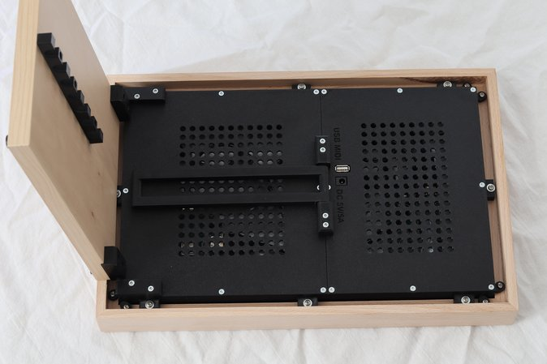
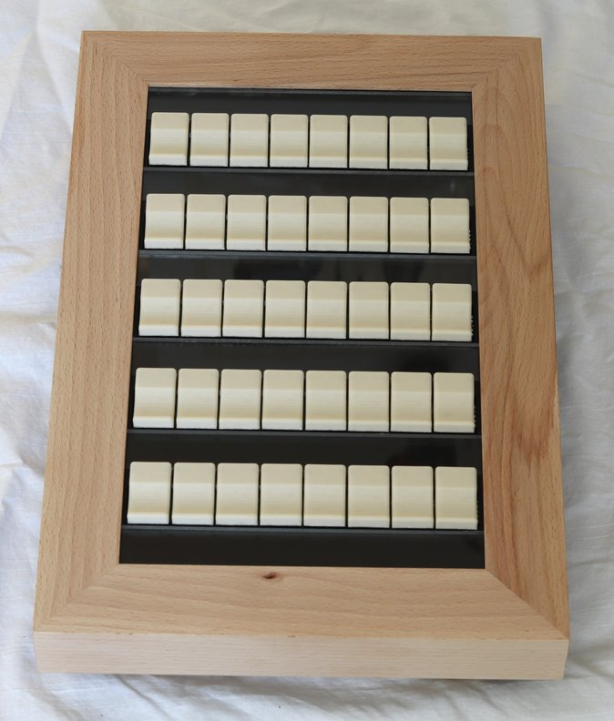
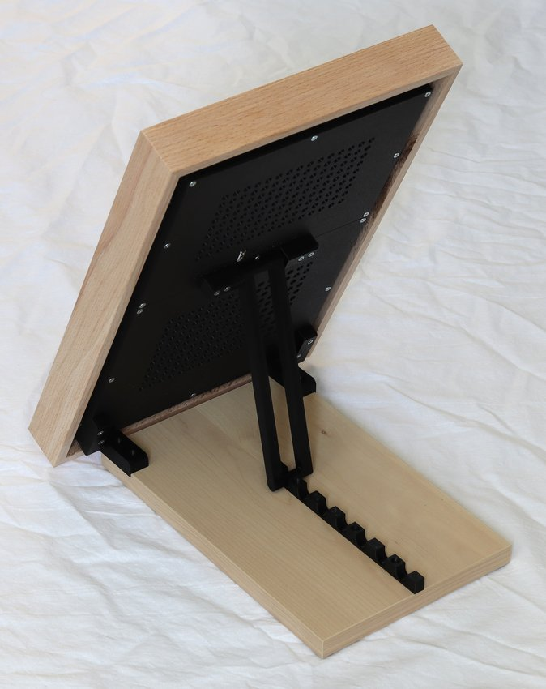
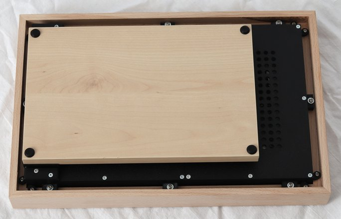
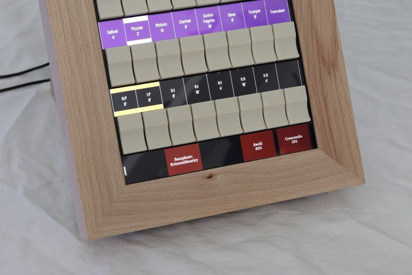

Tabula Magna — MIDI Stop-Tab Unit for Hauptwerk
New product. Tabula Magna is a standalone, self-labelling stop-tab unit for virtual pipe organs — a table-top organ controller that gives Hauptwerk real physical stop tabs, with labels and colours that follow the loaded sample set.

What is a MIDI stop-tab unit?
A MIDI stop-tab unit is a hardware add-on that gives organ software such as Hauptwerk real, physical stop tabs instead of a touchscreen or a mouse. It is the missing piece between a computer running a virtual pipe organ and the feel of a real console: you reach out and pull a tab, exactly as on a pipe organ, while the software keeps every label and lamp in sync.
Why Tabula Magna
- 40 real stop tabs in 5 rows of 8, each lit and labelled from Hauptwerk.
- Labels and colours follow the sample set — no printed cards, no stickers, no relabelling when you change organ.
- One USB cable, no driver — class-compliant USB-MIDI, plug-and-play on Windows, macOS and Linux.
- Configured from Hauptwerk itself — set it up once per sample set and it is remembered.
- Hall-sensor keying — every tab is read contactlessly, with nothing to wear out.
- Smart drag — sweep a finger across a row to set several stops in one gesture.
- 5 panel widgets — a strip for sample-set names, crescendo, swell and similar read-outs.
- No console rebuild — a standalone unit that sits behind the manuals of any setup.
Specifications
| Stop tabs | 40 (5 rows × 8), hall-sensor, contactless |
| Panel widgets | 5 |
| Display | Colour LCD behind the tab rail; labels and colours driven by Hauptwerk LCD32 displays |
| Connection | USB-MIDI (class-compliant, no driver) |
| MIDI binding | Note On/Off or NRPN, per tab, independently for input and output |
| Dimensions | 415 × 275 × 80 mm |
| Weight | 3.2 kg |
| Power supply | 5 V DC, 5 A (external supply included) |
How it works with Hauptwerk
Everything is configured once, in Hauptwerk, in four steps:
- MIDI ports — enable the Tabula input and output ports.
- Stop labels — send the stop names and colours to the unit's LCD32 displays.
- Pairing the tabs — use Hauptwerk's auto-detect to bind each tab to its stop.
- Outgoing MIDI — set what Hauptwerk sends back to light each tab.
Because Hauptwerk stores all of this per sample set, loading a different organ relabels the tabs and reconfigures the unit automatically. A sample set can even send its own appearance settings — fonts, sizes and colours — so each organ carries its own look.
Tabula Magna vs. the alternatives
| Touchscreen stops | Cheap, but you play with a mouse or a finger on glass — no physical tabs, no real feel. |
| DIY tabs and encoders | You source, wire, label and program everything yourself — hours of labour and skill. |
| Legacy digital consoles | Turnkey but expensive, with fixed stops that cannot follow a sample set. |
| Tabula Magna | One box, one cable, no driver: 40 real tabs whose labels and colours follow any Hauptwerk sample set. |
    


Video
▶️ Watch the Tabula Magna video (YouTube)
Documentation
📄 Tabula Magna User Manual (PDF)
Interested?
Tabula Magna is a new product. Contact us for pricing and availability, or to discuss how it fits your Hauptwerk setup — and see our MIDI modules and organ keyboards for the rest of the console.